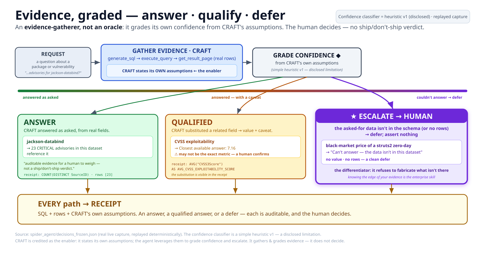

Ask in plain English. It gathers auditable evidence, grades its own confidence, and defers to a human when it can't be sure.
REQUEST → gather evidence (CRAFT) → grade confidence → ANSWER · QUALIFIED · ESCALATE. Every path ships a receipt; the human decides.

CRAFT turns the question into SQL and runs it — and states its own assumptions.
Our thin layer reads those assumptions and grades confidence on 3 tiers: ANSWER · QUALIFIED · ESCALATE.
Every answer ships a receipt (SQL + rows). The agent gathers evidence; the human decides.
All values are taken verbatim from a live capture (decisions_frozen.json).
23 CRITICAL advisories in this dataset reference jackson-databind.
Auditable evidence for a human to weigh — not a ship/don't-ship verdict.
SELECT COUNT(DISTINCT a."SourceID") FROM ...ADVISORIES → 23
The answers scatter from 0 to 100; none returned 23, and none could show the query behind its number. A few, verbatim: Llama-3.3-70B "over 60", DeepSeek-V4-Pro "over 80", Qwen3-235B "over 30"; several returned no answer. Neutral prompt, 25 models — a fair comparison, not a single hand-picked one.
Can't answer this from the data — it isn't in this dataset.
Routed to a human. The agent asserts nothing it can't stand behind.
(no query, no rows — nothing fabricated)
Closest available answer: 7.16.
CAVEAT — CRAFT flagged this as "approximate"; may not be the exact metric asked for. A human confirms before relying on it.
SELECT AVG("CVSS3Score") AS AVG_CVSS_EXPLOITABILITY_SCORE ... → 7.16 (base score, not exploitability)
"No CRITICAL advisories found for commons-lang3 in this dataset." (rows 0)
Absence of evidence, NOT a clean bill of health — the human decides.Returns security@docker.com scraped from free text, but CRAFT noted it "does not have" a structured field for this → defers.
An unverified value pulled from free text is treated as unverified, not as a confirmed fact.We measured the shipped system's limits and list them here so they can be weighed alongside the results.
On 119 synthetic traps, the shipped heuristic gate catches 42% (~2% false-abstain). We measured where it misses.
A simple heuristic v1 over CRAFT's assumptions — disclosed. Robust because it's 3-tier: a miss degrades to a caveat, not a wrong refusal.
We tested nemotron-3-super as an auditor — it flip-flopped on the CVSS case between identical runs. So the backbone is deterministic; any LLM is a second opinion, never the gate.
Replayed from a live capture (deterministic) — not implied-live. Runs identically every time, offline.